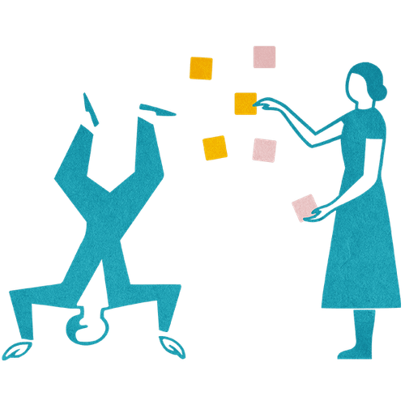

Mit der Academy erhaltet ihr im Business-Plan praxisnahe Lernmodule rund um Facilitation und wirksame Transformation.
Gemeinsam mit 9 Spaces zeigt Plan International Deutschland, wie wertebasiertes Arbeiten Orientierung gibt – nach innen wie nach außen.

Die Ausgangsfrage auf den Kopf stellen, um bessere Ideen zu generieren.
Ein Warm-up-Spiel, mit dem sich auch große Gruppen schnell kennenlernen
Ein Tool, das dabei hilft, komplexe Projekte zu koordinieren und ganzheitlich weiterzuentwickeln
Dieses Tool hilft euch dabei, in Meetings frei und kreativ zu denken. Wir empfehlen es vor allem für Formate, in denen es darum geht, Ideen zu generieren.